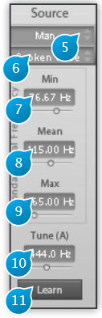
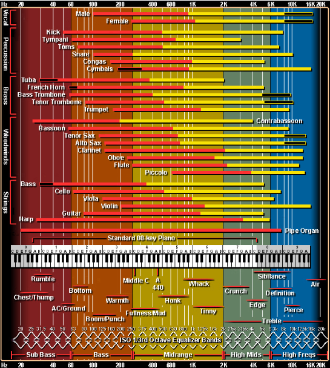

Source

The source panel settings are critical in obtaining a good and natural sounding result, should the latter be your objective, so you should always ensure to get these right before attempting any actual transformation of the audio content. The Source description is used to derive some fundamental processing parameters that are essential for high quality sound analysis and processing.
The source signal will be split into three distinct components: * Pitched content * Noise * Transients or onsets
And moreover 2 sets of descriptors are extracted:
- The fundamental frequency and its variation over time
- The formant and resonator characteristics
Based on these analysis the subsequent transformations will be performed.
This analysis being a very sophisticated process is based on decades of research made at IRCAM.
The analysis make uses of a little prior information about the source material, namely the range within which the fundamental frequency of the audio is known to vary. This range can be defined in three ways, using high-level to low-level parameter manipulation: * using named presets * using learn mode * manually fine-tuning low-level settings
(5) Source Preset
This setting, only relevant to voice mode, should match the recorded singer’s or speaker’s age and gender.
Available presets: * Man * Woman * Young Man * Young Woman * Boy * Girl
(6) Source Registers
The source register setting is only relevant to voice and instrument modes, and should match the source material register as closely as possible.
Available presets in Voice mode:
The following list of registers is available in Voice mode * Spoken Voice * Singing Bass * Singing Baritone * Singing Tenor * Singing Counter Tenor * Singing Contralto * Singing Mezzo Soprano * Singing Soprano
The selection of spoken and singing registers changes not only the analysis parameters but also the transformation algorithms that are linked to high level target controls. Transforming Man into Woman with Spoken voice will affect formant structure and pitch, while transforming Man Singing Tenor into Woman Singing tenor will only affect the formant structure.
Instrument mode:
The following list of registers is available in Instrument mode. If you do not know the register of the source, you can resort to manual tuning of the fundamental frequency, and refer to the chart below * Undefined. Default, general setting * Bass * Baritone * Tenor * Counter Tenor * Contralto * Mezzo Soprano * Soprano
(7) F0 Min
This low-level parameter defines the minimum of the allowed variation range for the source fundamental frequency. When doing manual adjustments, this frequency should roughly be set to that of the lowest note expected in your source material. This parameter determines the window size for monophonic material. Setting it too low may introduce reverberation artifacts, may prevent the detection of fast onsets ,and moreover, may introduce pitch detection errors. Setting it too high will create artifacts in low pitch notes and may as well lead to fundamental frequency estimation error.
(8) F0 Mean
This low-level parameter sets the expected average fundamental frequency. You can tune this by ear or determine it precisely using the frequency corresponding to the note most often played, for example, or the root key of the song if you know it. This value is used mainly for the ambitus control in recto tono mode.
(9) F0 Max
Maximum of the allowed variation range for the source fundamental frequency.
(10) Tune (A)
Sets the actual reference tuning used in the source material, which is defined as the frequency of A4 in Hertz. The default value is 440Hz, which matches the standard concert tuning almost always used nowadays.
This frequency will be used as the reference for transposition; you should therefore adjust it accordingly if your instrument is tuned in a non-standard way, or working with a recording of unknown origin.
(11) Learn
The Learn button, when engaged, puts the plug-in into fundamental frequency parameter learn mode, wherein the incoming audio is analyzed to refine F0 min, mean and max values. The learn mode is linked to the presets and can be used only to refine preset parameters. It will not work if the selected preset does not match the audio.

- http://www.independentrecording.net/irn/resources/freqchart/main_display.htm